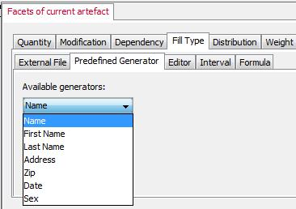

de.uni.bamberg.wiai.minf.forflow.datagenerator.controller.datageneration.filltype
Interface ObserverGenerator
- All Known Implementing Classes:
- DataGeneratorView
public interface ObserverGenerator
To get the possibility to register and un-register to generators
we use the Observer Pattern. Each time an observer registers
to an pre-defined generator the generator will be registered and
listed in the UI. In other words, a generator is as soon available
as an observer registers to it. The same holds, when an observer
removes itself or un-registers.
Usually observers are used to get notified when a change in
the subject happens. But we use the notification to list registered
generators in the UI, rather than getting notified about structural
changes.
The image below show registered pre-defined generators.

As the image shows, if an observer registers itself to an available subject (generator),
the subject gets listed in the list. And vice versa when un-registered.
Observer Pattern
Observer defines a one-to-many dependency between objects, so that when
one object changes state, all its dependents are notified and updated
automatically.
This defines the subject to observe. It's possible that more objects (observers) observe
a subject (observable). But there's always only one subject to observe.
That's the one-to-many dependency. Many observers, but one subject.
- Since:
- Apr/30/09
- Version:
- 0.1
- Author:
- Michael Munz
|
Method Summary |
void |
updateGenerator(boolean add,
Generator generator)
With this method observers get the latest
updates about its observed subject. |
updateGenerator
void updateGenerator(boolean add,
Generator generator)
- With this method observers get the latest
updates about its observed subject.
This kind of observer is different from the common usage.
When an update occurs, we do not update the data structure,
but we do either add or remove the generator from a list.
- Parameters:
add - there're to operations possible:
- add
if flag set to true
- remove
if flag set to false.
This operation is implicit.
generator - delivers informations about which generator
has notified an update.